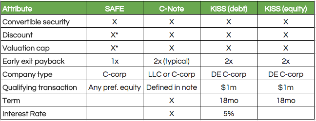

Here is a summary of the 4 types of financing we'll mention:
1. Type of Organization. First, because of the way they are written, a company issuing a SAFE must be a C-Corp, not an LLC. With slight modifications to the SAFE documents, an LLC can issue SAFE financing, but this is definitely something to be aware of.
2. Simplicity. The fundamental touted benefit of using a SAFE is its simplicity and the cost savings associated with simplified negotiations. Especially if you’re raising money from friends and family, this can be a huge benefit. Instead of negotiating principal amount, interest, and term like you would be with a convertible note, all a SAFE requires is negotiating the valuation cap or discount rate (or both). Y Combinator has multiple safe options on their website, providing for a combination of cap, no cap, discount, and no discount. There is also a “most-favored nation” (MFN) version, which has no cap and no discount, but if your company subsequently issues SAFEs with provisions advantageous to the investors holding the safe (e.g. a cap or discount rate), the original SAFE can be amended to reflect terms of later-issued SAFEs. Standard SAFE language includes:
3. Difference in change of control provisions. Another typical difference between SAFE and convertible notes is the early exit/ change of control provision (if the company is acquired or merges with another company). SAFE documents are written to give the investor a choice, at acquisition, of a 1x payout OR conversion to equity using the valuation cap to determine equity percentage. The typical convertible note percentage offers a 2x payout option, and will sometimes not have a conversion to equity option for the investor.
4. Difference in qualifying transaction. Next, convertible notes typically stipulate a “qualifying transaction” or minimum amount of money to be raised in an equity round that triggers the note’s conversion. SAFEs convert when ANY amount is raised in a preferred equity round.
5. Termination date./ Another benefit of the SAFE is that it has no termination date, meaning your company won’t have debt coming due that may not line up with month-to-month cash flow. The SAFE will simply convert to equity if/when your company has an equity financing round.
We also want to talk about KISS ("Keep It Simple Securities"), which are in many way similar to SAFE documents and were created by a prominent Silicon Valley law firm and accelerator (500 Startups). You can find more information here. There are two versions of the KISS: (1) debt and (2) equity. Both have maturity dates in 18 months upon which conversion can occur. The debt version is more similar to a convertible note since it accrues interest, while the equity version is more similar to a SAFE. While SAFEs are more popular, here are the basic features of KISS, as written by 500 Startups:
7. For obvious reasons, SAFEs are generally viewed as more founder-friendly, but investors too can be happier to deal with them because there is one standardized form (from Y Combinator), so they know what to expect. As you’ve no doubt encountered, there are thousands of convertible note form documents, all different. This just adds transaction cost to the negotiation, and investors are often fine giving up the 6-10% annual interest they’d be receiving on a note payment for a more simplified negotiation process.
There is also a school of thought that convertible financing is not necessarily beneficial to the company. This argument is outlined rather well in this blog post by prominent VC Fred Wilson. The main point made is that convertible debt and SAFEs simply defer very difficult conversations for a later date, which can be dangerous.